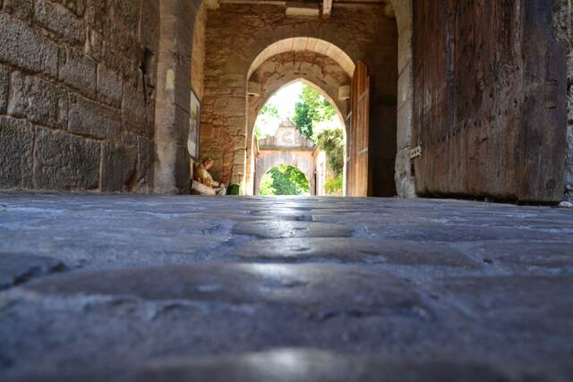

南ドイツの景色はぼくの原風景のひとつになっている。 古城、街、教会、黄葉、新緑、ドイツパン、・・・。 南ドイツの風景は美しい。
仕事の関係でミュンヘンに出張することが多い。 週末を利用してそのとき訪れた南ドイツの風景について書き綴ったのが、この「南ドイツ散歩」だ。 その大半は、観光ガイドブックには載っていないような場所について、 観光ガイドブックには載っていないような角度から書いてみたものだ。 南ドイツの美しさを知ってくれる人が少しでも増えてくれるとうれしい。
南ドイツの街は、SIMも持たず時間も気にせず、気の向くままに歩くのが好きだ。 2時間に1本の電車を逃したり、路線バスの乗継を間違えたり、まぁよくあることだがそれでいいのだ。 バイエルンチケット（バイエルン州内の各駅停車と路線バスが1日乗り放題になる青春18切符のようなもの）を片手に、 ミュンヘンから片道5時間かけて各駅停車で村を訪ね、また5時間かけて帰ってくるということもよくやる。 同じ街を何度も訪れることもある。 季節が変われば、天気が変われば、そのとき自分が考えていることが変われば、風景が変わってくる。 観光名所をめぐりたいのではない。 地元の路線バスに乗り、村の人たちに道を教えてもらい、 村教会を訪れ、牧草地を駆け上がり、入り組んだ裏路地を歩き、パン屋さんを探し、スーパーを散策する。 南ドイツの自然と人々の生活を感じ取りたいのだ。
とある村を訪れようと思って路線バスを待っていたところ、時間を過ぎてもバスが来ない。 Rufbus（呼び出しバス）といって事前に電話で予約しないと来ないバスだと教えてもらった。 その2年後、もう一度この村を訪れようとする。 朝、駅のinformationでバスの電話予約をお願いしたところ、 今度は、「日曜日はバス会社が休みで、タクシー会社に委託するので前日に電話しないとダメだよ」と教えてもらう。 そこまでその村に行きたいのならタクシーを使えばいいじゃないかと言われそうだが、それじゃだめなんだ。 辿り着ければいい、観光名所が見れればいい、という問題ではない。 南ドイツの風景とそこに溶け込んでいる生活を感じ、そのなかで自分の問題をいろいろ考えたいのだ。 ある種の「フィールドワーク」である。
記事の数が多いので、興味はあるけど時間はないという方のためにいちばん心に残った風景を挙げておきたいと思います。
南ドイツ以外のヨーロッパのお散歩記事もいくつか追加しました。
お散歩した場所の数：165。